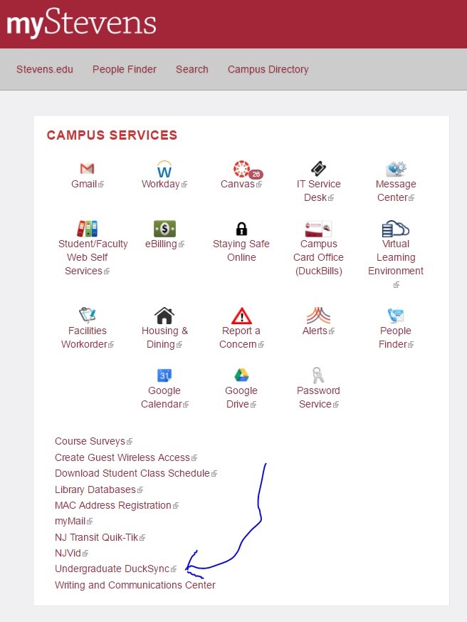
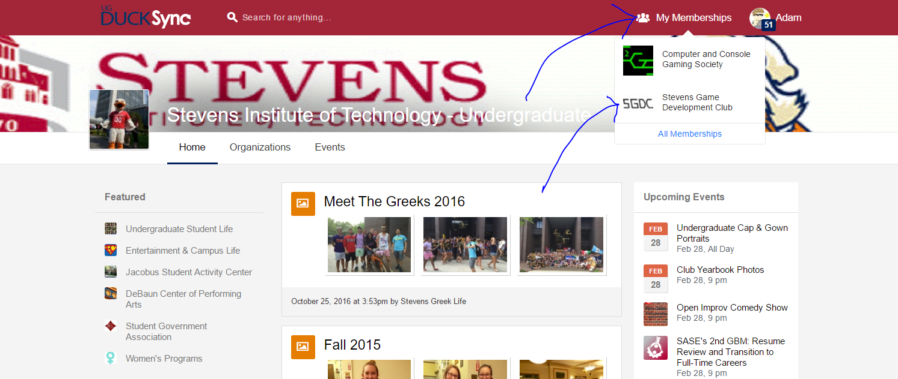
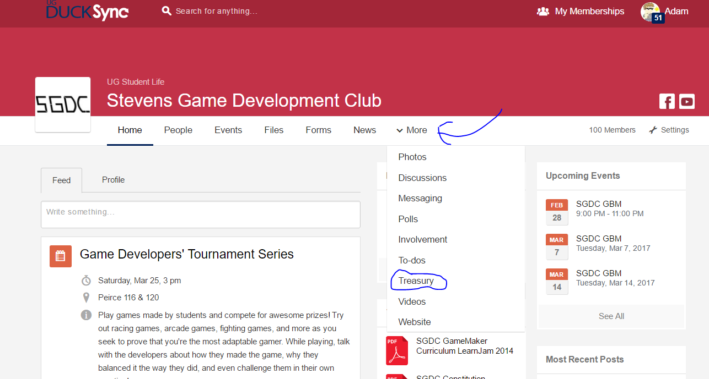
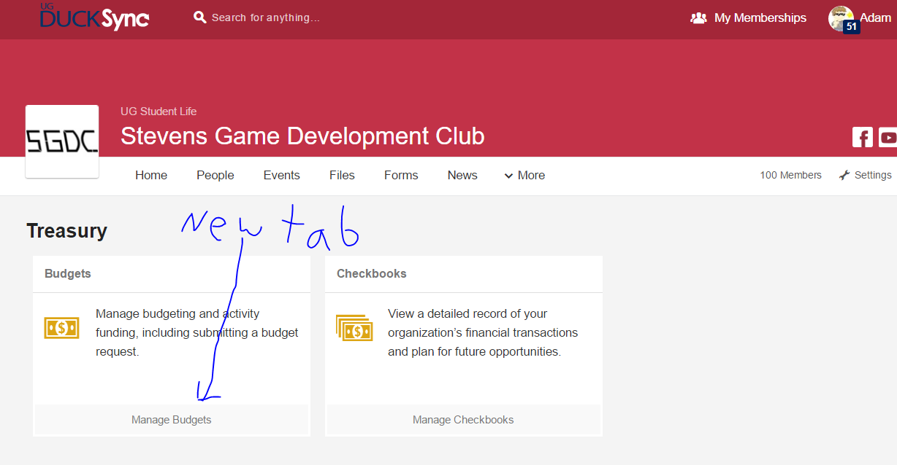
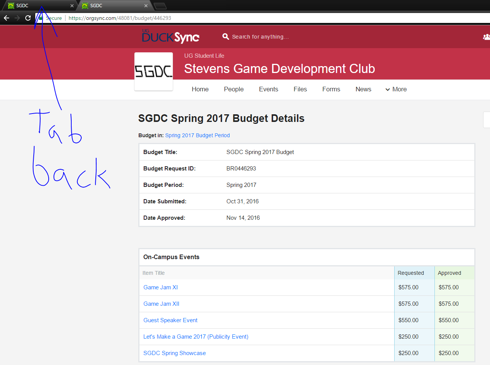
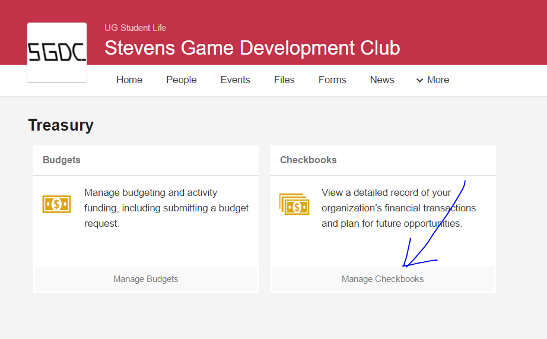
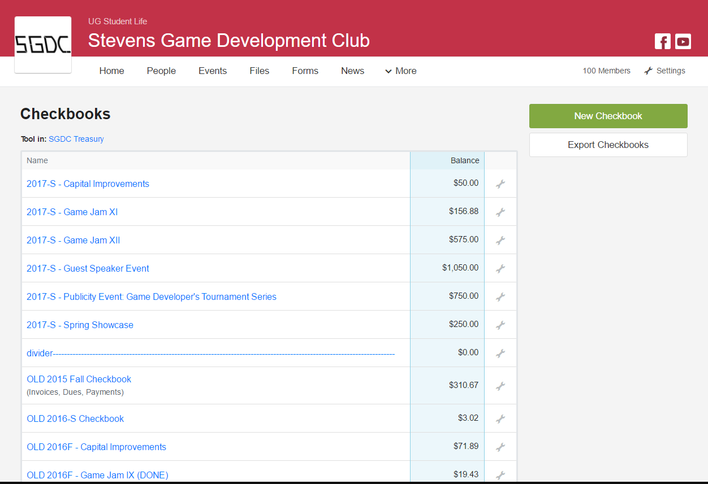
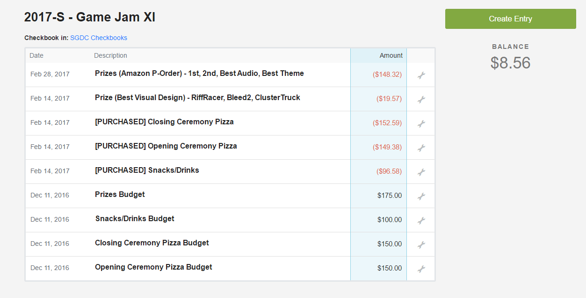

If you're new, you were probably elected during the SGA's Unified Elections Policy, or otherwise later into a semester. This probably means that the budget for the current semester has already been decided on. First things first, you need permission to make changes and generally do your job.
Step 1: All RSO Treasury information is handled on DuckSync, which can be accessed from MyStevens -> Undergraduate DuckSync.
Step 2: Access your club by selecting "My Memberships" -> Your Club. If it does not appear, you have not joined your Organization on DuckSync and need to do so by searching for them via the site's search bar.
Step 3: Once you see your Organization's Homepage, select More -> Treasury. If you do not see Treasury under More, your President (or the previous President), needs to update the "People" tab under your DuckSync Organization, set you to an Administrator, and give you Treasury access.
Step 4: Now you see two options: Manage Budgets, and Manage Checkbooks. For now, open Manage Budgets in a new tab and click over to it.
Step 5: Navigate to your current semester (Spring 2017 shown here), and select your budget.

Step 6: On this screen you can see the budget your club requested, and how much it got approved. If nothing is here, consider asking your previous E-board why they didn't request any budget. Click around to get a feel for what the requests may look like. Keep this tab open, and tab back to the Treasury window we arrived at in Step 4.
Step 7: Click on Manage Checkbook.
Step 8: This is your list of Checkbooks. Below is how I have formatted mine -- the SGA has commended this format and I'd recommend sticking to it. Each Budgeted Event of yours should have a Checkbook, and Capital Improvements should have its own for each Semester.
Step 9: Here is an example completed Checkbook. All initial budgeted line items (as seen in your Semester Budget in Step 6) are listed as positive values, and all purchases are described with negative values. Doing this lets the SGA see how you are spending the money you were given, and also helps you organize your spending, to prevent your club from entering the red.
Step 10: Organizing your own Checkbook(s). If your previous Treasurer didn't use this system, didn't know about it, or otherwise left it out of date, your first priority should be to bring every budgeted event (seen in Step 6) into Checkbook. Bringing over all of the line items takes only a few minutes, and will make your time as Treasurer much easier. Find out how much was spent on events and Capital Improvements before you became Treasurer, and make sure all of it is accounted for. You should also do this once your new budget gets approved for next semester. A more elaborate explanation on Checkbook can be found in the next section.
Next Section: Checkbook ---->Back to Home